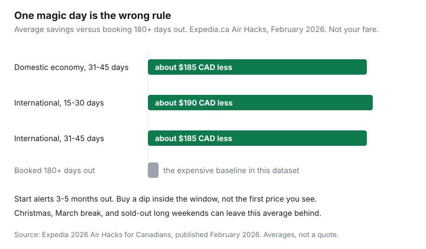

Travel · Canada
When to Book Flights from Canada: Domestic vs International Windows That Actually Matter
Households still book the way a 2014 blog told them to: Tuesday, six months out, one rule for Vancouver and for Lisbon. That rule is why a domestic fare bought in January is often the expensive one, and why a Basic fare that looked $80 cheaper becomes the costly one at the bag drop.
This is a Canada-origin method. Expedia’s 2026 Air Hacks for Canadians (published February 2026) split domestic and international windows. Those are averages across a lot of trips, not a promise for your March-break week. Peak dates can leave the average behind. A trip under about 800 km may not be a flight problem at all — price it with the door-to-door flight, train, and drive guide before you open a fare calendar.
Disclosure: Flight-search sites and fare-alert tools are an offer type. Saving Optimizer may earn a commission if we later add partner links. We do not currently claim airline or booking-site partnerships. Bag fees and the 24-hour rule were read from airline pages on 23 Sep 2026 and change. Education only.
Key takeaways
- Expedia’s February 2026 Canada data put domestic economy cheapest at 31–45 days out (about $185 CAD less than booking 180+ days out) and international economy cheapest at 15–30 days (about $190 less). A 31–45 day international booking still beat six months out by about $185.
- Set the alert 3–5 months before you fly. Buy a dip inside the window. The first email is not the fare.
- Price YHM, YKF, and YXX against your home airport, with a ±3 day calendar, before you lock time off.
- Air Canada Economy Basic (tickets from 3 Jan 2025) is a personal item on many North American routes. WestJet UltraBasic is the same idea. Add the bag.
- Count same-day backup flights, not logos. A once-daily nonstop has no same-day plan B.
- Air Canada’s customer service plan lets you cancel a ticket it sold, including a non-refundable fare, within 24 hours for a full refund. Agency tickets go back through the agency.
Separate domestic and international booking windows—do not use one magic day rule
Expedia’s Canada report, updated February 2026, is the useful split. Domestic economy was cheapest 31–45 days before departure, about $185 CAD less than bookings made 180 or more days out. International economy was cheapest 15–30 days out, about $190 CAD less than six months out. Households that will not leave an international trip that late still beat the six-month price by booking 31–45 days out, about $185 less in the same dataset.
Departure day is a second lever, and it is not the same lever. In that Canada report, Friday was the cheapest day to fly domestically (up to about 7% versus Monday). Thursday was the cheapest day to fly internationally (about 8% versus Saturday). Monday was the cheapest day to book overall; Sunday was the cheapest day to book Canadian domestic (about 5% versus Wednesday); Saturday was the expensive booking day. September was the cheapest month for international trips in the report, about 26% below December, on the order of $160. None of that is a reason to move a wedding.
| Trip | Cheapest booking window | Versus 180+ days out | Cheapest departure day in the report |
|---|---|---|---|
| Domestic economy | 31–45 days | about $185 CAD less | Friday (up to ~7% vs Monday) |
| International economy | 15–30 days | about $190 CAD less | Thursday (~8% vs Saturday) |
| International, if you will not wait | 31–45 days | about $185 CAD less | Same Thursday test |

Use the window as a buy zone, not a commandment. Christmas week, Ontario March break, and a sold-out long weekend can empty the sane inventory earlier than the average. If your dates are fixed and peak, start the search earlier and buy a fare you can live with once it is inside the budget. Then use the 24-hour window below if the next morning is better. Do not “set and forget” a fare eight months out because anxiety peaked on a Sunday night.
Set Google Flights or Kayak alerts 3–5 months out and act on dips, not first sightings
Open the tracker when the trip is real: usually three to five months before departure for an international holiday, and a bit later is fine for a domestic weekend you can move. Google Flights price tracking and Kayak alerts both work. Track the city pair you will actually fly, with dates flexible if the calendar allows it. Put the alert on the fare family you will buy, not on a Basic headline you would never take to the gate.
Act on a dip, not the first sighting. The first email often arrives because you asked to be told about any price, including a bad one. Compare the new price with the range you have already seen and with the window in the table. A fare that shows up four months out, then again $120 lower inside 31–45 days, was information the first time and a decision the second time.
- One alert per true trip (home airport, and a second alert only if an alternate airport is a real option).
- Check the total with bags before you call it a dip. A $40 drop that deletes your carry-on is not a drop.
- If the dates are school-fixed, the alert’s job is the price, not a fantasy Thursday.
- Turn the alert off after you ticket, except for the 24-hour recheck.
Use nearby airports (YHM, YKF, YXX) and flexible ±3 day calendars before locking dates
Three airports show up on Canadian leisure searches because the fare gap can be real and the ground cost is easy to ignore.
- YHM (John C. Munro Hamilton) sits southwest of Toronto. Sun and some domestic flying can price under YYZ. The save dies if the rideshare, the parking, or an extra hotel night eats it. Time the drive in the hour you will actually leave, not at noon on a Tuesday.
- YKF (Region of Waterloo) is the smaller schedule for households who already live in Waterloo Region or Guelph. A cheaper ticket that means a 5 a.m. departure and a paid parking week is a door-to-door number, not a headline.
- YXX (Abbotsford) is the Fraser Valley alternative to YVR on some leisure routes. Price the drive and the return parking against the YVR fare and the Canada Line. A $90 ticket gap is not $90 if the party is four people in a taxi.
Before any of those codes, open a ±3 day calendar on the home airport. Test the cheap departure day from the Expedia report as a hypothesis: Friday for a domestic trip, Thursday for an international one. If the only week you have off is the last week of December, the calendar will not invent a shoulder fare. For a short trip, stop and run the under-800 km comparison. A train or a car can beat a “cheap” flight once bags, the airport ride, and a connection are in the total.
Compare all-in price: bags, seat selection, and change rules—not headline Basic fares
The headline Basic or UltraBasic fare is a personal-item product on a lot of North American flying. Price the trip you will take.
Air Canada’s carry-on page, read 23 Sep 2026: Economy Basic tickets purchased on or after 3 January 2025 include one personal item, not a standard carry-on, when you travel within Canada, to or from the United States (including Hawaii and Puerto Rico), or to or from Mexico, Central America, and the Caribbean. A bag that does not qualify is checked before security. The airline’s page describes a gate-handling pre-authorization around CA/US $65–$78 tax inclusive if you reach the gate with a bag the fare does not allow. An international itinerary that includes a standard carry-on keeps that carry-on for the whole trip, including a Canadian connection. Confirm the receipt.
Checked-bag fees on Air Canada’s baggage-changes page, same day: for Economy Basic and Standard fares purchased on or after 13 April 2026, within Canada, to or from the U.S., or to or from Mexico, the Caribbean, or Central America, the first checked bag is CA/US $45 and the second is $60, taxes extra. Flex includes the first bag. For Basic fares purchased on or after 14 May 2026 to Africa, Asia and the South Pacific, Europe, the Middle East, or South America, the first checked bag is $90 and the second is $120. On those long-haul routes, Standard and Flex include the first bag. Domestic Basic versus Standard is often a carry-on question, not a checked-bag question: both can charge for the first checked bag.
| What you buy | Headline | What you add | Sketch total before tax on extras |
|---|---|---|---|
| Basic, personal item only | $289 | Nothing, if the under-seat bag is truly enough | $289 |
| Basic, but you need a roller | $289 | Two checked segments at $45, plus $30 seat selection each way | $439, and the roller is not in the cabin |
| Standard, carry-on included | $369 | No checked bag. Seat selection still possible. | $369 before a seat fee |
| Flex, first checked bag included | $449 | One checked bag each way is in the fare. Changes follow Flex rules. | $449, then read the change rule |
WestJet’s fee page, read the same day: UltraBasic on flights within Canada and the U.S. is a personal item. A carry-on is included to and from Europe and Asia, and when Extended Comfort is bought for every flight in that direction. Prepaid first checked bag within Canada or the U.S. is published as $55–$65 (the range is tax by departure airport), second bag $70–$83. Online check-in and the airport cost more. A carry-on that is not allowed is checked and draws a checked-bag fee plus a service fee (WestJet’s flight terms describe a service fee on the order of $25–$30). UltraBasic changes are not allowed. Two adults who each need a bag can erase a $70 headline gap before anyone sits down.
Add seat selection per direction, not per “booking.” Two adults, $35 each way, is $140. If you will not pay it, assume the seats are apart on a Basic or UltraBasic product and decide if that is acceptable for this trip.
Air Canada vs WestJet schedule and connection risk for the same city pair
The same city pair is not the same trip. Billy Bishop (YTZ) and Pearson (YYZ), a nonstop and a connection through Montreal, or a WestJet flight that runs once a day versus an Air Canada bank of four, change the cost of a cancellation. Count same-day alternatives if the first flight dies. One flight a day means the backup is tomorrow. Four flights a day means a delay can still be the same city that night.
Connection risk is a household question, not a brand question. A 45-minute connection at Pearson in January, on a fare you cannot change, is a bet that the inbound is early. Separate tickets are a harder bet: the second airline does not owe you the protection that a single ticket’s connection gets. That limit is spelled out in the passenger-rights claim guide. If you must be at a ceremony at 4 p.m., buy the schedule that still works when the first flight is an hour late, and buy it on one ticket.
Air Canada’s network (including Jazz and Rouge as operating carriers) usually means more frequencies on many domestic city pairs. WestJet is often the simpler nonstop on western leisure routes and a thinner timetable in parts of the east. Neither fact picks the fare. Write down: nonstop or connect, how many same-day flights remain after yours, whether a change is allowed, and whether a missed connection is the airline’s problem or yours. Then compare all-in prices. A logo is not a reliability statistic, and this page will not invent one.
Re-check fares after booking: 24-hour refund windows and when rebooking beats eating the fare
Air Canada’s customer service plan, read 23 Sep 2026, says you may cancel a ticket up to 24 hours after purchase and receive a full refund without penalty. The policy applies to refundable and non-refundable fares. Air Canada processes that refund when you bought the ticket from Air Canada. If a travel agency or another airline issued the ticket, you cancel through them. The useful habit is dull: book, then look again the next morning before the window closes. If the fare dropped by more than the bother, cancel and rebook inside the window. If you typed the wrong date, this is the cheap time to fix it.
After 24 hours, Basic and UltraBasic are often a fare you eat. Rebooking beats eating the fare when you are still inside a free-cancel window, or when a flexible fare’s change fee is smaller than the drop and you still want the trip. It does not beat eating the fare when you cancel a non-refundable ticket on day three and hope for a gesture. WestJet and other airlines publish their own clocks. Read the confirmation the day you buy. Do not assume an agency’s UltraBasic fare inherited the airline’s 24-hour rule.
A tight, cheap connection is also a trip that can start late. Provincial health plans pay little of a foreign hospital bill. The buying method for that policy lives on the Insurance guide, why provincial plans barely cover you abroad. Do not treat a fare rule as medical cover.
Sources & date stamps
- Expedia.ca, 2026 Air Hacks (updated February 2026), and the Expedia Group Canada release the same month — domestic 31–45 days and about $185 versus 180+ days; international 15–30 days and about $190; international 31–45 days and about $185; Thursday, Friday, Monday, and Sunday booking-day notes. Used 23 Sep 2026.
- Air Canada, carry-on baggage and “Baggage fee changes” (pages dated 13 Apr 2026 and 14 May 2026) — Basic personal-item rule from 3 Jan 2025; checked-bag amounts cited above. Used 23 Sep 2026.
- Air Canada customer service plan — cancel within 24 hours of purchase for a full refund without penalty, including non-refundable fares sold by Air Canada. Used 23 Sep 2026.
- WestJet, service fees, carry-on, and flight terms — UltraBasic personal item, prepaid bag ranges, and the gate service fee. Used 23 Sep 2026.
Frequently asked questions
How far ahead should I book a flight from Canada?
Split the trip. In Expedia’s February 2026 Canada data, domestic economy was cheapest 31–45 days out and international economy was cheapest 15–30 days out, both versus booking 180 or more days ahead. Set an alert earlier, at three to five months, and buy a dip inside that window. Christmas, March break, and other fixed peak weeks can sell out of sane prices sooner.
Is there one cheapest day to book?
Not one day for every trip. Expedia’s 2026 Canada report called Monday the cheapest day to book overall, Sunday the cheapest day to book Canadian domestic, and Saturday the most expensive booking day. Friday was the cheapest domestic departure day in that report, and Thursday the cheapest international departure day. Test your dates. Do not move a fixed week off to chase an average.
Are Basic and UltraBasic actually cheaper?
Sometimes, if you truly travel with one personal item and will not change the ticket. On many North American routes those fares exclude a carry-on. Air Canada’s post-13 Apr 2026 domestic first checked bag is $45 before tax on Basic and Standard. WestJet’s prepaid UltraBasic first bag within Canada or the U.S. is published as $55–$65 including the airport’s tax range. Add seats. Then compare.
Can I get a refund if the fare drops tomorrow?
Air Canada’s customer service plan allows a full refund without penalty up to 24 hours after purchase, including non-refundable fares it sold. Agency tickets are cancelled through the agency. After that window, a Basic or UltraBasic fare is often yours to keep. Read the confirmation the day you buy.
Should I book Hamilton, Waterloo, or Abbotsford to save money?
Only after you price the ride, the parking, and the time. YHM, YKF, and YXX can undercut YYZ, YYZ-area, or YVR on some leisure trips. A cheaper ticket that needs a taxi for four people, or an extra night, is not cheaper. Run a plus-or-minus three day calendar on the home airport first.